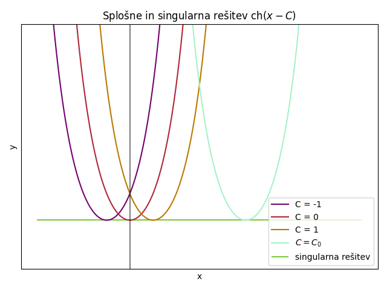
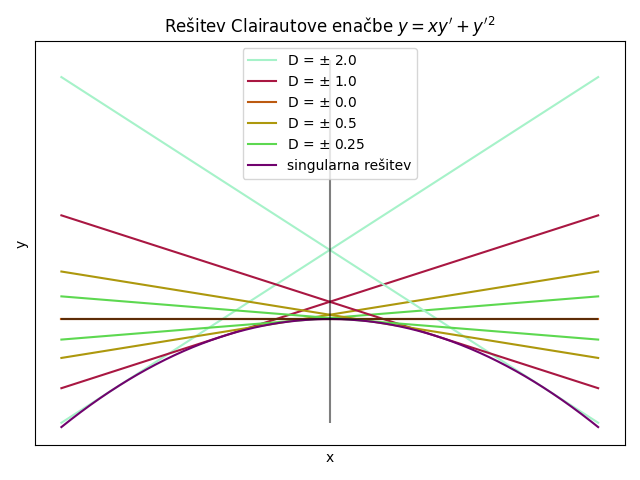
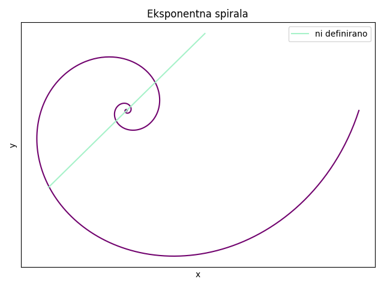
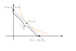
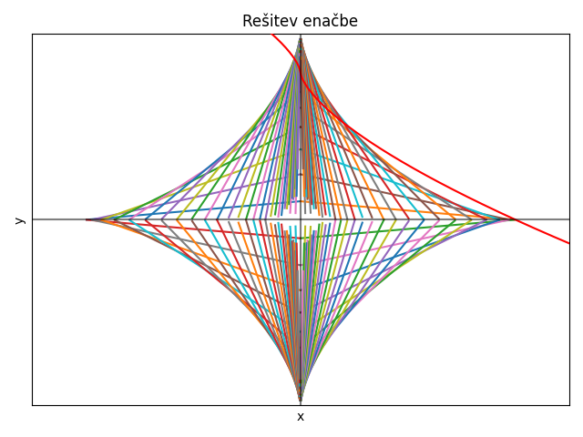

Mat3teden10
Table of Contents
Happy December everybody. Tukaj ne bo nobenih božičnih okraskov. Also joke of the week: Life is like polymer physics - just one way to be straight, and a lot of ways to be kinky.
1. Navadne diferencialne enačbe
1.1. Singularne rešitve 2024/12/02
Obravnavamo enačbo \( y' = f(x, y) \). Naj bo \( y = \Psi (x, C) \) splošna rešitev. (Kandidata za) singularno rešitev iščemo s pomočjo enačbe
\[ \frac{\partial \psi}{\partial v} (x, C) = 0 \]
oz poenostavljeno \( \frac{\partial \psi}{\partial C} = 0 \)
1.1.1. Primer 7.17 (p.S.)
Rešujemo primer \( y = \sqrt{1 + y' ^2} \). Zaradi korena velja, da je \( y \ge 1 \).
Enačba nas spominja na hiperbolične funkcije. Spomnimo se, da velja \( \mathrm{ch} ^2 x = 1 + \mathrm{sh} ^2 x \). Poskusimo z nastavkom
\[ y = \mathrm{ch} z \]
Če odvajamo, dobimo \( y' = \mathrm{sh}(z)\cdot z' \). Če dobljene enakosti vstavimo notri, dobimo
\begin{align*} \mathrm{ch}^2 z &= 1 + z' ^2 \cdot \mathrm{sh} ^2 z \\ 1 + \mathrm{sh}^2 z &+ 1 + z' ^2 \cdot \mathrm{sh} ^2 z\\ & \implies (z' ^2 - 1) \mathrm{sh} ^2 z =0 \end{align*}\( \mathrm{ch}z \) ima obliko-ish parabole, medtem ko ima \( \mathrm{sh}z \) obliko kubične funkcije (again, -ish).
- \( \mathrm{sh} z(x) = 0 \) iz česar potem sledi, da je \( z(x) = 0 \) in potem \( y(x) = 1 \).
- \( z ^2 - 1 = 0 \), kar pomeni, da sta rešitvi \( z' = 1 \) ali \( z' = -1 \)
Iz tega potem sledi izražava za \( z \):
\[ z(x) = \pm x + C \]
in še izražava za \( y \)
\[ y(x) = \mathrm{ch} (\pm x + C) = \mathrm{ch} (x + C) \]
Splošna rešitev je oblike
\[ y (x) = ch(x - C); \ C \in \mathbb{R} \]

Singularna rešitev je \( y = 1 \), krivulja, ki ni del splošne rešitve, ampak se hkrati dotika vsake članice splošne rešitve.
Velja:
\[ \psi(x, C) = \mathrm{ch} (x - C) \]
Po na začetku povedani trditvi je
\begin{align*} \frac{\partial \psi}{\partial C} &= \frac{\partial }{\partial C} \mathrm{ch}(x - C)\\ &= \mathrm{sh} (x - C) \cdot (-1) \\ &= \mathrm{sh} (C - x) \end{align*}Želimo zadostiti pogoju \( \frac{\partial \psi}{\partial C} = 0 \), kar pomeni torej, da velja \( \mathrm{sh}(C - x) = 0 \).
Iz tega potem sledi
\[ C - x = 0 \ \implies C = C(x) = x \]
\( y = \phi(x) \) je singularna rešitev dobimo kot \( y = \psi(x, C(x)) \), kjer \( C(x) \) potem reši \( \frac{\partial \psi}{\partial C} = 0 \)
Ves čas se sprašujemo, kaj nam enačbe povedo. Kaj pomenijo. Kaj nam kričijo s papirja, pa mi tega ne slišimo.
Tako dobimo rešitev singularne rešitve
\begin{align*} y(x) &= \psi(x, C(x)) \\ &= \mathrm{ch} (x - C(x)) \\ &= \mathrm{ ch} (x - x) \\ &= 1 \end{align*}Pripomba: Če gresta skozi eno točko dve rešitvi, potem morata biti tangentni, kar pa pri nas ni. Prav tako ni težave s tem, samo zanima nas, kaj nastane tam, kjer se grafi splošne rešitve sekajo, saj ima ista točka dva različna naklona. To izhaja iz definicije naše enačbe, tj. \( y' = f(x, y) \).
1.2. Clairautova diferencialna enačba
To je enačba oblike
\[ y' = xy' + f(y') \]
kjer je \( f \) odvedljiva na \( J^{odp} \subset \mathbb{R} \)
1.2.1. Trditev 7.3. (p.S.)
Splošna rešitev Clairautove diferencialne enačbe je podana s formulo
\begin{equation} \label{eq:2} y = Cx + f(C) \end{equation}Singularna rešitev je podana z
\begin{align*} x &= -f'(t) \\ y &= - f'(t)t + f(t); t \in J \end{align*}kar je parametrični zapis krivulje.
Dokaz za singularno rešitev:
Predpostavljamo, da je splošna rešitev:
\begin{equation} \label{eq:1} \psi(x, C) = Cx + f(C); \ C \in \mathbb{R} \end{equation}Iz definicije singularne rešitve velja
\begin{align}\label{ali:clair} 0 &= \frac{\partial \psi}{\partial C} = x + f'(C) \\ &\implies x = -f'(C) \\ &\overset{\ref{eq:1}}{\implies} y = \psi(x, C) = - f'(C) C + f(C) \end{align}To lahko rešimo tudi s pomočjo t.i. naivne metode: da malo pogledamo in vidimo, kaj lahko naredimo.
1.2.2. Primer 7.11 (p.S.)
Rešujemo enačbo \( y = x y' + y' ^2 \). Iz \ref{eq:2} sledi, za \( f(t) = t ^2 \) da je rešitev podana z \( y = \psi(x, C) = Cx + C ^2 \). Singularna rešitev: iz \ref{ali:clair} sledi
\begin{align*} x &= - 2t \\ y&= -2t \cdot t + t ^2 = t ^2 & \implies y = - \frac{x ^2}{4} \end{align*}Dajmo narisati:

Označimo \( y_C = Cx + C ^2 = C(x + C) \). Opazimo, da velja \( y_{-C}(x) = y_C(-x) \). Za rešitev \( C=1 \), če imamo \( C=-1 \), samo zrcalimo čez ordinato.
Narišimo sedaj še našo ogrinjačo - singularno rešitev - naše družine.
1.3. Homogene nelinearne diferencialne enačbe 2024/12/03
1.3.1. Definicija 7.2 (p.S.)
Naj bo \( F: S \to \mathbb{R} \), kjer je \( S \subset \mathbb{R} ^2 \) oz. v skrajnem primeru \( \mathbb{R} \times \mathbb{R} \). podana in koeficient \( \alpha \in \mathbb{R} \). Pravimo, da je \( F \) homogena reda \( \alpha \), če za vsak par \( x, y \in S \) in \( t> 0 \) velja
\[ F(tx, ty) = t^{\alpha} F(x, y) \]
1.3.2. Definicija 7.3 (p.S.)
Homogena diferencialna enačba je enačba oblike
\begin{equation} \label{eq:3} y' = f(x, y) \end{equation}, kjer je \( f \) homogena funkcija reda 0, tj. \( f(x, y) = f(1, \frac{y}{x}) \), če \( x \ne 0 \).
Če upoštevamo definicijo 7.2,
\[ x(x, y) = x^{0} (1, \frac{y}{x}) \]
Reševanje vpeljemo z \( z = \frac{y}{x} \) (oz. \( y = zx \)). Tedaj \ref{eq:3} postane
\begin{align} (zx) ' &= f(x, zx) \\ z'x + z &= f(1, z) \\ z'x &= f(1, z) - z && z' = \frac{\mathrm{d} z}{\mathrm{d} x} \\ \label{ali:hde} \int\limits_{}^{} \frac{1}{f(1, z)}\,\mathrm{d z} &= \int\limits_{}^{} \frac{1}{x}\,\mathrm{d x} = \log \left| x \right| \ \end{align}Iz tega sledi, da je rešitev homogene diferencialne enačbe
\[ F(z) = \log \left| x \right| + C \implies \ F(\frac{y}{x}) - \left| x \right| = C \]
- Primer 7.5
Rešujemo enačbo
\[ y' = \frac{x + y}{x y} = f(x, y) \]
Vidimo, da je enačba homogena, saj
\[ f(tx, ty) = f(x, y) \quad \forall x, y, t \]
Torej iz \ref{ali:hde} dobimo
\begin{align*} \int\limits_{}^{} \frac{1}{\frac{1 + z}{1 - z } - z}\,\mathrm{d z} &= \log \left| x \right|\\ &= \int\limits_{}^{} \frac{1 - z }{1 + z - z (1 - z)}\,\mathrm{d z} \\ &= \int\limits_{}^{} \frac{1 - z}{1 + z ^2}\,\mathrm{d z} \\ &= \int\limits_{}^{} \frac{1}{1 + z ^2}\,\mathrm{d z } - \frac{1}{2} \int\limits_{}^{} \frac{2z }{1 + z ^2}\,\mathrm{d z} \\ &= \arctan z - \frac{1}{2} \log (1 + z ^2) + C \end{align*}Tako smo dobili
\[ \arctan z - \frac{1}{2} (1 + z ^2) + C = \log \left| x \right| \]
oz.
\begin{align*} \arctan \frac{y}{x} - \frac{1}{2} \log \left( 1 + \frac{y ^2}{x ^2} \right) + C &= \log \left| x \right| \\ \arctan \frac{y}{x} - \frac{1}{2} \left( \log (x ^2 + y ^2) - \log (x ^2) \right) + C &= \log \left| x \right| \\ \arctan \frac{y}{x} - \frac{1}{2} \log (x ^2 + y ^2) + \frac{1}{2} \log (x ^2) &= \log \left| x \right| + C && \text{ integrala se odštejeta}\\ \arctan \frac{y}{x} - \log \sqrt{x ^2 + y ^2} &= C && \text{polarne} \\ \phi - \log r &= C && \left. \right / \cdot e \\ e ^{\phi - \log r} &= D \\ e^{\frac{\phi}{r}} &= D \end{align*}Iz tega sledi, da je rešitev
\[ r = D e^{\phi} \]

Dobimo eksponentno spiralo. Naša enačba nima rešitev za \( x = y \), kar pomeni, da je rešitev sestavljena iz odprtih intervalov.
1.4. Prvi integral
1.4.1. Definicija 7.4 (p.S.)
Prvi integral diferencialn enačbe
\begin{equation} \label{eq:4} F(x, y, y') = 0 \end{equation}je takšna funkcija \( u = u(x, y) \), da za vsako rešitev \( y = y(x) \) enačbe \ref{eq:4} velja
\[ \frac{\mathrm{d} }{\mathrm{d} x} u (x, (x)) = 0 \]
oz \( u(x, y(x)) = C \) za neki \( C \in \mathbb{R} \).
To pa pomeni, da je graf \( \left\{ (x, y(x)); \, x \in I \right\} \) funkcije (rešitve) \( y \) vsebovan v nivojnici \( \left\{ u = C \right\} \) funkcije \( u \).
To pa pomeni, da je \( \left\{u(x, y) \equiv C \right\} \) nivojnica funkcije \( C \).
Enačba \( u(x, y) = C \) je implicitni opis rešitve za \( F = 0 \).
- Primer 7.6
Imamo enačbo
\[ y' = - \frac{x}{y} \]
Vemo, da ima rešitev
\[ x ^2 + y ^2 = C \]
Iz česar sledi, da je prvi integral funkcije
\[ u(x, y) = x ^2 + y ^2 \]
Imamo enačbo \[ y = y' \]
Vemo, da ima rešitev
\[ y = C e^x \]
iz česar sledi, da je prvi integral funkcije (izraziš C)
\[ u(x, y) = y e^{-x} \]
- Iskanje prvega integrala enačbe \( y' = f(x, y) \)
Ideja: Če 1. integral \( u \) že poznamo, tedaj \( u(x y) = C \) odvajamo po \( x \): če pišemo \( u = u (\xi, \eta) \), tedaj dobimo
\[ u_{\xi} (x, y) \cdot 1 + u_{\eta} (x, y) \cdot \frac{\partial y}{\partial x} = 0 \]
Torej želimo enačbo \( y' = f(x, y) \) zapisati kot
\[ P(x, y) + Q(x, y) y' \]
kjer je polje \( (P, Q) \) potencialno, tj. \( (P, Q) = \nabla u \) za neki \( u \).
Tak \( u \) bo 1. integral enačbe \( y' = f(x, y) \).
Vemo, da je
\[ (P, Q) = \nabla u \implies \ P_y = Q_x \]
1.4.2. Definicija 7.5 (p.S.)
Enačbi
\[ P \mathrm{dx} + Q \mathrm{dy} = 0 \]
kjer je \( P_y = Q_x \) pravimo eksaktna.
- Povzetek
Če je enačba ekstaktna, je (lokalno) njena rešitev \( u(x, y) = C \), kjer je \( u \) potencial polja \( (P, Q) \)
- Primer 7.7 (p.S.)
Rešujemo enačbo
\[ 2xy ^3 \mathrm{dx} + 3 x ^2 y ^2 \mathrm{dy} = 0 \]
\( (P, Q) = \nabla (x ^2 y ^3) \), zato je \( x ^2 y ^3 = C\) rešitev.
- Primer
Rešujemo enačbo
\[ \left( y ^2 e ^{x y ^2} + 4 x ^3 \right)\mathrm{dx} + \left( 2xye^{xy ^2} - 3y ^2 \right) \mathrm{dy} = 0 \]
Velja \( P_y = Q_x \implies (P, Q) \), podana in potencial \( u \). Uganemo 1. integral
\[ u(x, y) = e^{xy ^2} + x ^4 - y ^3 \]
iz česar potem sledi rešitev
\[ e^{xy ^2} + x ^4 - y ^3 = C \]
Izračunamo \( P = u_x \): \[ u(x, y) = \int\limits_{}^{} P\,\mathrm{d x} = e^{x y ^2} + x ^4 + C(y) \]
Sedaj odvajamo po \( y \) in primerjamo strani
\begin{align*} 2xy e^{xy ^2} - 3y ^2 &= Q = u_y = 2xy e^{xy ^2} + 0 + C'(y) \\ C'(y) &= -3y ^2 \end{align*}Iz česar potem sledi, da je
\[ C(y) = - y ^3 + D \]
kar nesemo v \( u \) in dobimo
\[ u(x, y) = e^{xy ^2} + x ^4 - y ^3+ D \]
- Neeksaktne enačbe (\( P_y \ne Q_x \))
Recimo, da je \( P\mathrm{dx} + Q \mathrm{dy} = 0 \) ekstaktna (\( P_y = Q_x \)). Pomnožimo jo z \( \mu(x, y) \ne 0 \):
\[ (P\mu) \mathrm{dx} + (Q\mu) \mathrm{dy} = 0 \]
Toda enačba ni več ekstaktna v splošnem
\begin{align*} (P \mu )_y &= P_y \mu + P\mu_y \\ (Q \mu) _x &= Q_x \mu + Q \mu_x \end{align*}Miselnost obrnemo: iz neeksaktne enačbe lahko z množenjem dobimo ekstaktno.
Taki funkciji \( \mu \) rečemo integrirajoči množitelj. Poiščemo ga v posebnih primerih.
\begin{align} P_y \mu + P\mu_y &= Q_x \mu + Q\mu_x \\ \label{ali:pdemu} (P_y - Q_x)\mu - Q\mu_X + P\mu_y &= 0 \end{align}To je pa parcialna diferencialna enačba \( \mu \), kar ne sodi v Mat3 in si zato zadevo poenostavimo.
Enačbo \ref{ali:pdemu} rešujemo (le) v primerih, ko jo znamo enostavno zapisati kot navadno diferencialno enačbo.
Npr. če lahko najdemo \( \mu \), ki je odvisna le od ene spremenljivke.
\begin{align*} \mu(x, y) &= \tilde{\mu}(x) \\ &= \tilde{\mu}(y) \\ &= \tilde{\mu}(xy) \end{align*}Drug možen zapis eksaktne enačbe je
\[ P (x, y) + Q(x, y) y' = 0 \]
- Primer
Imamo \( \mu(x, y) = \tilde{\mu}(x) \) iz česar sledi, da je \( \mu_x = \tilde{\mu}' \). \ref{ali:pdemu} se glasi
\begin{align} (P_y - Q_x) \tilde{\mu} - Q \tilde{\mu}' + 0 &= 0 \\ \label{ali:mutilde} \frac{\tilde{\mu}}{\mu} = \frac{P_y - Q_x}{Q} \end{align}To bo mogoče, če bo izražava na desni odvisna le od \( x \).
Povzetek Če je \( \frac{P_y - Q_x}{Q} \) odvisna le od \( x \), tedaj obstaja \( \tilde{\mu} = \tilde{\mu}(x) \) tako, da velja
\[ (P \tilde{\mu}) + Q(\tilde{\mu}) y' = 0 \]
je ekstaktna, še več, \( \tilde{\mu} \) dobimo iz navadne diferencialne enačbe \ref{ali:mutilde}
\[ \frac{\tilde{\mu}' }{\tilde{\mu}} = \frac{P_y - Q_x}{Q} \]
Podobno velja za \( \tilde{\mu}(y), \, \tilde{\mu}(xy),\, \tilde{\mu}(x + y), \ldots \).
Za \( \tilde{\mu} = \tilde{\mu}(y) \) velja
\[ \frac{\tilde{\mu}'}{\tilde{\mu}} = \frac{Q_x - P_y}{P} \]
- Primer 7.8 (p.S.)
Rešujemo
\[ (xy ^2 - 1) \mathrm{dx} - x ^2 y \mathrm{dy} = 0 \]
Pogledamo vrednost razlike
\[ P_y - Q_x = 2xy - (-2xy) =4xy \ne 0 \]
Enačba ni eksaktna. Toda
\[ \frac{P_y - Q_x}{Q} = \frac{4xy}{- x ^2 y} = - \frac{4}{x} \]
kar je odvisen le od \( x \). Vzamemo integrirajoči množitelj \( \mu \) podan z enačbo \ref{ali:mutilde}
Od tod sledi
\begin{align*} \frac{\mu'}{\mu} (x) &= - \frac{4}{x} \\ \implies \mu(x) &= x ^{-4} \end{align*}Torej sedaj gledamo eksaktno enačbo
\begin{align*} (P\mu)+ (Q\mu) y' &= 0 \\ \frac{x y ^2 - 1}{x ^4} - \frac{x ^2 y}{x^4} y' &= 0 \frac{x y ^2}{x ^4} - \frac{y y'}{x ^2} &= 0 \end{align*}Vemo, da obstaja \( u = u(x, y) \) tako, da velja
\[ u_x = \frac{x y ^2 - 1}{x ^4} \quad u_y = \frac{- y}{x ^2} \]
Integriramo po \( y \) in dopolnimo, da velja za \( u_x \)
\[ u(x, y) = - \frac{y ^2}{2 x ^2} + \frac{1}{3 x ^3} \]
Kar je rešitev naše enačbe.
1.5. Implicitno podane diferencialne enačbe
Obravnavamo (pod)primera:
- \( F(x, y') = 0 \)
- \( F(y, y') = 0 \)
Rešitve poiščemo v parametrični obliki
\begin{align*} x &= x(t) \\ y &= y(t); \ t \in I \end{align*}Imamo oznake
\begin{align*} \dot{y} &= \frac{\mathrm{d} y}{\mathrm{d} t} \\ \dot{x} &= \frac{\mathrm{d} x}{\mathrm{d} t} \\ y' &= \frac{\mathrm{d} y}{\mathrm{d}x } \end{align*}Po verižnem pravilu velja
\begin{equation} \label{eq:5} y' = \frac{\dot{y}}{\dot{x}} \end{equation}\( F(x, y') = 0 \) Ekvivalentno: \( (x, y') \) leži na nivojnici \( \left\{ F = 0 \right\} = F^{-1} (0) \)
Naj bo \( (\psi(t), \theta(t)),\ t \in J \) parametrizacija nivojnice \( \left\{ F = 0 \right\} \).
Sledi
\begin{align*} x &= \psi(t) \\ y' &= \theta(t) \end{align*}Iz \ref{eq:5} sledi
\[ \dot{y} = y' \cdot \dot{x} = \theta(t) \cdot \dot{\psi}(t) \]
in posledično
\[ y(t) = \int\limits_{}^{}\dot{\psi}(t), \theta(t) \,\mathrm{d t} \]
Povzetek: Če je \( t \mapsto (\psi(t), \theta(t)) \) parametrizacija krivulje \( \left\{ F = 0 \right\} \), tedaj parametrizacijare rešitve za \( F(x, y') = 0 \) dobimo z
\begin{align} \label{ali:fxy} x &= \psi(t) \\ y &= \int\limits_{}^{}(\dot{\psi}\theta)(t)\,\mathrm{d t} \end{align}\( F(y, y') = 0 \)
Tokrat \( (y, y') \) leži na nivojnici \( \left\{ F = 0 \right\} \).
Sledi
\begin{align*} y &= \psi(t) \\ y' &= \theta(t) \end{align*}Matematika nas v tej fazi sama pelje naprej.
Iščemo \( x = x(t) \). Zadovoljni bomo z \( \dot{x} = \dot{x}(t) \), saj potem lahko integriramo.
Iz zveze \ref{eq:5} sledi
\[ \dot{x} = \frac{\dot{y}}{y'} = \frac{\dot{\psi}(t)}{\theta(t)} \]
Povzetek: Če je \( t \mapsto (\psi(t), \theta(t)) \) parametrizacija za \( \left\{ F = 0 \right\} \), tedaj parametrična rešitev za \( F(y, y') = 0 \) dobimo z
\begin{align}\label{ali:fyy} x(t) &= \int\limits_{}^{} \left( \frac{\dot{\psi}}{\theta} \right)(t)\,\mathrm{d t} \\ y(t) &= \psi(t) \end{align}
1.5.1. Primer 7.9 (p.S.)
Rešujemo enačbo
\[ x = \frac{y'}{\sqrt{1 + y' ^2}} \]
Ta enačba je oblike \( F(x, y') = 0 \) za \( F(u, v) = u - \frac{v}{\sqrt{1 + v ^2}} \).
Iščemo parametrizacijo za krivuljo \( \left\{ F = 0 \right\} \). Vzamemo
\begin{align*} v &= \mathrm{cotg} (s) = \theta(s) \\ u &\overset{\left\{ F=0 \right\}}{=} \frac{v}{\sqrt{1 + v ^2}} = \frac{\mathrm{cotg} s}{\sqrt{1 + \mathrm{cotg} ^2 s}} = \mathrm{cotg} s \cdot \left| \sin s \right| = \cos s \mathrm{sgn} (\sin s) \end{align*}Iz tega potem sledi
\begin{align*} u &= \begin{cases} - \cos s; \ s \in \left( - \pi, 0\right) \\ \cos s; \ s \in \left(0, \pi \right) \end{cases} = \psi(s) \\ v &= \mathrm{cotg}s = \theta(s) \end{align*}Sedaj rešitev diferencialne enačbe dobimo iz \ref{ali:fxy}:
\( s \in (0, \pi) \)
\begin{align*} \psi(s) &= \cos s\\ \theta(s) &= \mathrm{cotg}s \end{align*}in iz \ref{ali:fxy} dobimo
\begin{align*} x &= \cos s \\ y &= \int\limits_{}^{} (- \sin s) \mathrm{cotg}s \,\mathrm{d s} = - \int\limits_{}^{} \cos s\,\mathrm{d s} = C - \sin s \end{align*}Rešitev je potem
\begin{align*} (x, y) &= (0, C) + (\cos s, - \sin s); \ s \in (0, \pi) \\\ &\overset{t=-s}{=} (0, C) + (\cos t, \sin t); \ t \in (-\pi, 0) \forall C \in \mathbb{R} \end{align*}Rešitev je torej spodnji del krožnice s središčem po ordinatni osi (odvisno od izbranega C)
- \( s \in (- \pi, 0) \) je isto in za domačo nalogo
Alternativno lahko enačbo preoblikujemo
\begin{align*} x ^2 &= \frac{y' ^2}{1 + y' ^2} \\ x ^2 + x ^2 y' ^2 &= y ' ^2 \\ y' ^2 ( 1 - x ^2 ) &= x ^2 \\ y' ^2 &= \frac{x ^2}{(1 - x ^2)} \\ y' &= \frac{x}{\sqrt{1 - x ^2}}; x \in \left( -1 , 1 \right) \\ y &= \int\limits_{}^{} \frac{x}{\sqrt{1 - x ^2}}\,\mathrm{d x } = C - \sqrt{1 - x ^2}; \ C \in \mathbb{R} \end{align*}1.5.2. Primer 7.10
Rešujemo primer \[ y = \sqrt{1 + y' ^2} \]
Enačba je ekvivalentna \( F(y, y') = 0 \), če vzamemo \( F(u, v) = u - \sqrt{1 + v ^2} \). Krivuljo \( \left\{ F = 0 \right\} \) parametrizirano kot
\begin{align*} v &= \mathrm{sh} (t) = \theta(t) \\ u &\overset{\left\{ F = 0 \right\}}{=} \mathrm{ch}t = \psi(t) \end{align*}Spomnimo se hiperboličnih funkcij:
\begin{align*} \mathrm{sh}t &= \frac{e ^t - e^{-t}}{2} \\ \mathrm{ch}t &= \frac{e^t + e^{-t}}{2} \\ \mathrm{sh} t ' &= \mathrm{ch} t \\ \mathrm{ch} t' &= \mathrm{ sh} t \end{align*}Ko imamo take eksistencialne krize, ko ne vemo, ali sta \( e^t \) in \( e^{-t} \) zamenjana, si jaz narišem graf.
Iz enačb \ref{ali:fyy} sledi
\begin{align*} x(t) &= \int\limits_{}^{}1 \,\mathrm{d t} = t + C \\ y &= \mathrm{ ch} t && \text{ sledi rešitev iz singularne rešitve} \\ y &= \mathrm{ch} (x - C) \end{align*}1.5.3. Primer Clairautova diferencialna enačba
Spomnimo se, da je Clairautova diferencialna enačba enaka
\begin{align*} y &= xy' + f(y') && \left.\right/ \frac{\mathrm{d} }{\mathrm{d} x} \\ y'' (x + f'(y')) &= 0 \end{align*}Rešitvi sta dve
- \( y'' = 0 \)
- \( x + f'(y') = 0 \)
Kar je enačba oblike \( F(x, y') =0 \) za \( F(u, v) = u + f'(v) \). Parametrizacija za \( \left\{ F = 0 \right\} \) je
\begin{align*} v &= t = \theta (t) \\ u &= - f'(t) &= \psi(t) \end{align*}Iz \ref{ali:fxy} sledi
\begin{align*} x &= \psi(t) = - f'(t) \\ y &= \int\limits_{}^{} (\dot{\psi} \theta) (t)\,\mathrm{d t} = \int\limits_{}^{}(- f''(t)) \cdot t\,\mathrm{d t} = -f'(t) t + f(t) &\implies x = - f'(t) \\ y&= -f'(t) t + f(t) \end{align*}1.5.4. Primer
Iščemo krivuljo \( y = y(x) \) z lastnostjo, da za vsak \( T(x_0, y_0) \) je razdalja med
- presečiščem tangente na krivuljo v točki \( T \) z \( x \) osjo konstantna
- presečiščem tangente na krivuljo v točki \( T \) z \( y \) osjo konstantna

Tangenta na graf v točki \( T \) je
\[ y - y_0 = f'(x_0) (x - x_0) \]
Funkcije \( f \) še ne poznamo in jo iščemo. Z drugimi besedami
Približuje se novo leto in si beležimo želje, ki bi veljale za to našo funkcijo \( f \).
Na našem grafu imamo dve točki, ki sta obe na tangenti
\begin{align*} Y(x_0, y_0) &: x = 0: \ y = y_0 - x_0 f'(x_0) \\ X(x_0, y_0) &: y = 0: \ x = x_0 - \frac{y_0}{f'(x_0)} \end{align*}Tako lahko zapišemo
\begin{align*} X &= \left( x_0 - \frac{y_0}{f'(x_0)} \right)\\ Y &= \left( 0, y_0 - x_0 f'(x_0) \right) \\ \implies l &= \left| X - Y \right| = \left| \left( x_0 - \frac{y_0}{f'(x_0)}, x_0 f'(x_0) - y_0 \right) \right| \\ X - Y &= \left( x_0 - \frac{y_0}{f'(x_0)} \right) \cdot \left( 1, f'(x_0) \right) && \text{kjer sta oba člena } \in \mathbb{R} ^2 \\ l ^2 &= \left| X - Y \right| ^2 = \left( x_0 - \frac{y_0}{f'(x_0)} \right) ^2 \left( 1 + f'(x_0) ^2 \right) \end{align*}Sedaj pišimo
\begin{align*} x_0 &\rightarrow x \\ f(x_0) = y_0 &\rightarrow y \\ f'(x_0) \rightarrow y' \end{align*}Dobimo diferencialno enačbo
\[ l = \left| x - \frac{y}{y'} \right| \sqrt{1 + y' ^2} \]
Imamo dve možnosti
\( l = \left( x - \frac{y}{y'} \right) \sqrt{1 + y' ^2} \)
Od tod sledi, da če zgornjo enakost pomnožimo z \( y' \), dobimo
\begin{align*} ly' &= (xy' - y) \sqrt{1 + y' ^2} && \left. \right/ : \sqrt{1 + y' ^2} \\ \frac{ly'}{\sqrt{1 + y' ^2}} &= xy' - y \\ y &= xy' - \frac{ly'}{\sqrt{1 + y ' ^2}} \end{align*}To je Clairautova diferencialna enačba za
\begin{equation} \label{eq:6} f(t) = - \frac{tl}{\sqrt{1 + t ^2}} \end{equation}Splošna rešitev je
\[ y = Cx - \frac{Cl}{\sqrt{1 + C ^2}}; \ C\in \mathbb{R} \]
Če pišemo \( C = \mathrm{sh} D \), potem so to rešitve premice
\[ y = (\mathrm{sh} D) \left( x - \frac{l}{\mathrm{ch} D} \right) \]
\( l = - \left( x - \frac{y}{y'} \right) \sqrt{1 + y' ^2} \)
Opazimo, da je to enako, kakor če bi dali \( - \) iz desne strani na levo.
Tako je splošna rešitev enaka
\[ y = (\mathrm{sh}D) \left( x \pm \frac{l}{\mathrm{ch}D} \right); \ D \in \mathbb{R} \] Spreminja se tudi naklon premice, saj ko se \( D \) veča, se večata \( \mathrm{sh}D \) in \( \mathrm{ch}D \), kar pomeni, da se pri približevanju koordinatnemu izhodišču naklon veča.
Singularne rešitve: zahtevamo
\begin{align*} x &= - f'(t) \overset{\ref{eq:6}}{=} \frac{l}{(1 + t ^2)^{\frac{3}{2}}} \\ y &= -f'(t) t + f(t) = \left( \frac{t}{\sqrt{1 + t ^2}} \right)^3 l \end{align*}Rešitev je potem
\[ x^{\frac{2}{3}} + (- y) ^{\frac{2}{3}} = \left[ \frac{1}{1 + t ^2} + \frac{t ^2}{1 + t ^2} \right] = l^{\frac{2}{3}} \]
oz.
\[ \left| x \right| ^{\frac{2}{3}} + \left| y \right| ^{\frac{2}{3}} = l ^{\frac{2}{3}} \]

Opomba: Rdeča črta je krivulja, ki bi se morala prilegati naši zvezdi, ampak se očitno ne. Razlog? Nimam pojma.